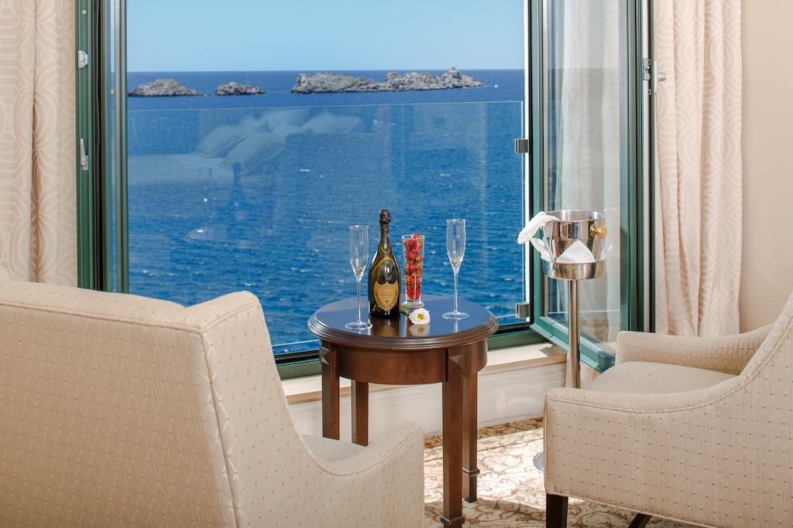

<!-- beginning of side menu -->
<ion-menu side="start" menuId="custom" contentId="main" class="my-custom-menu">
  <ion-header>
    <ion-toolbar color="secondary">
      <ion-title>HotelAdvisor</ion-title>

    </ion-toolbar>
  </ion-header>
  <!-- content of side menu -->
  <ion-content  color= "secondary">
    <ion-list>
      <ion-item color= "white" routerLink="/home">Home</ion-item>
      <ion-item color= "white" routerLink="/about">About</ion-item>
      <ion-item color= "white" routerLink="/how-to-use">How to use</ion-item>
    </ion-list>
  </ion-content>
</ion-menu>

<ion-header>
  <ion-toolbar color= "secondary">
    <ion-buttons slot="start">
      <ion-menu-button></ion-menu-button>
    </ion-buttons>
    <ion-title>
      Home
    </ion-title>
  </ion-toolbar>
</ion-header>

<!-- beginning of routes to other pages: archived (Hotel 1), hotel2 and hotel3 -->
<ion-router-outlet id="main">
  <ion-list class="list">
    <br>
    <ion-item>
      
      <br><ion-label class= "hotels" routerLink="/archived">Hotel Rixos*****</ion-label>
    </ion-item>
    <br>
    <ion-item>
      
      <ion-label class= "hotels" routerLink="/hotel2">Hotel Royal Princess*****</ion-label>
    </ion-item>
    <br>
    <ion-item>
      
      <ion-label class= "hotels" routerLink="/hotel3">Hotel Lapad****</ion-label>
    </ion-item>
    <br>
  </ion-list>
</ion-router-outlet>